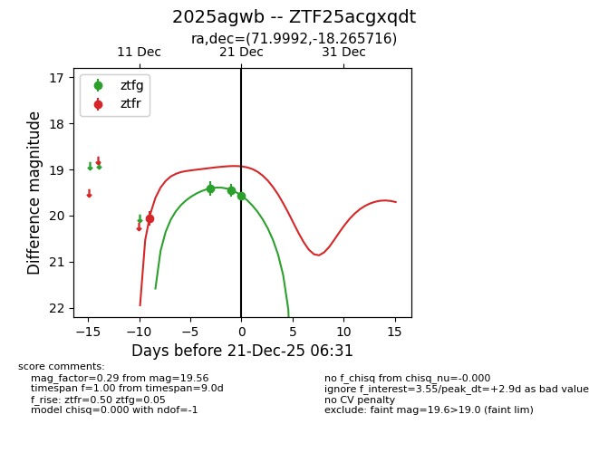
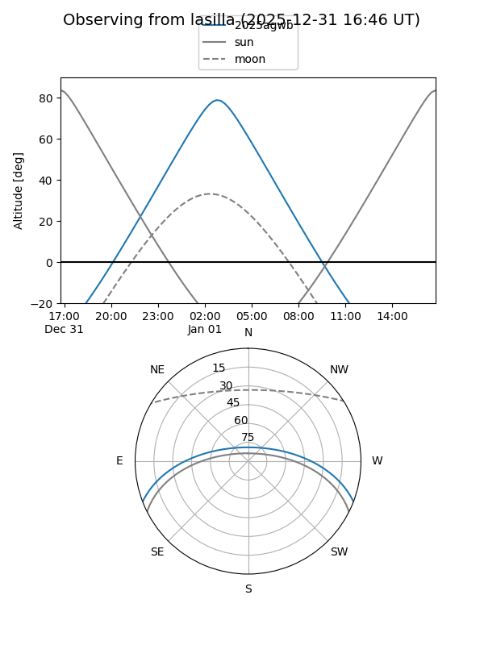
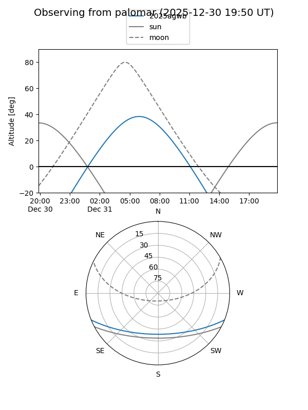
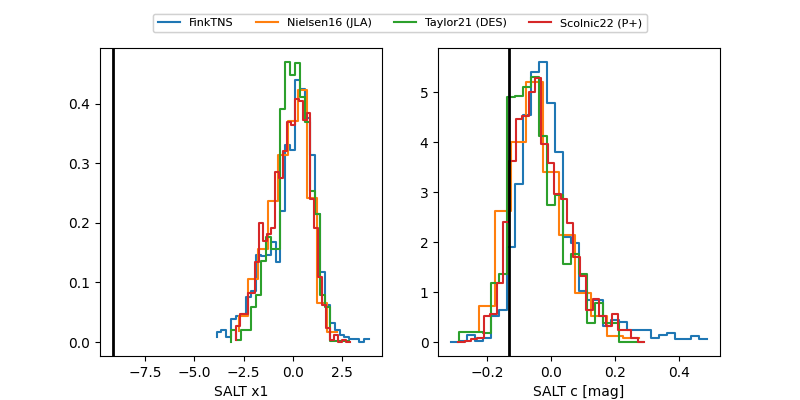

2025agwb
Target 2025agwb at 2025-12-31 18:00
Aliases and brokers:
FINK: link
Lasair: link
ALeRCE: link
TNS: link
YSE: link
alt names
ZTF25acgxqdt (ztf,fink_ztf)
2025agwb (tns,yse)
ATLAS25pxs (atlas)
PS25jbh (panstarrs)
Coordinates:
equatorial (ra, dec) = 71.9992,-18.26572
equatorial (HMS+DMS) = 04:47:59.81,-18:15:56.58
galactic (l, b) = (216.9202,-35.19983)
Flags:
Photometry:
last ztfg=19.56, ztfr=19.58
3 ztfg, 3 ztfr detections
Lightcurve

Visibility


Additional plots
